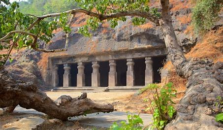
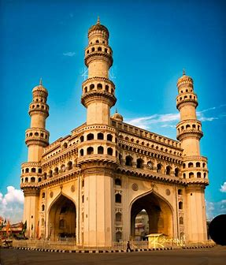
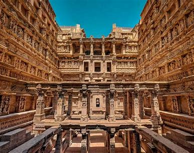
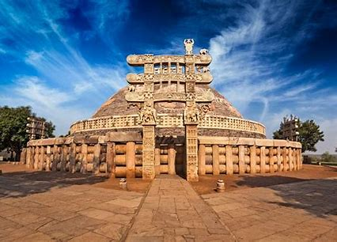
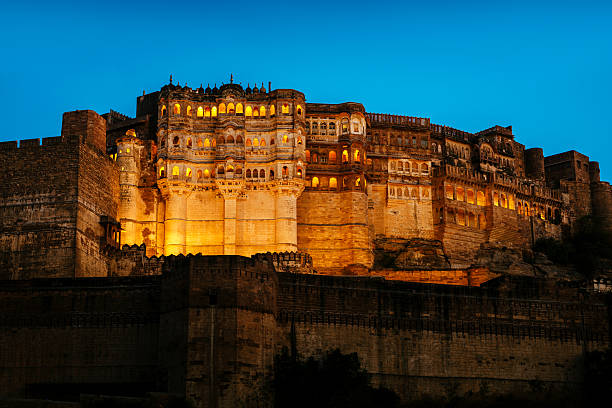
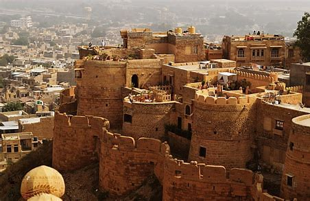
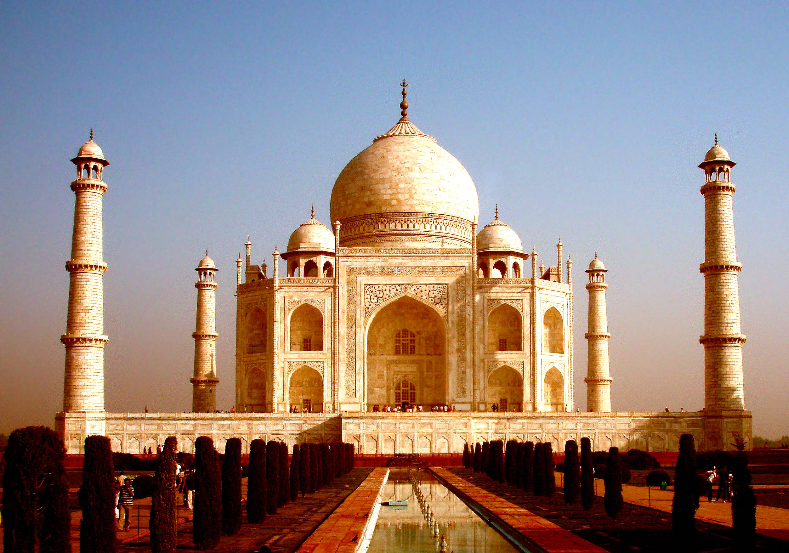
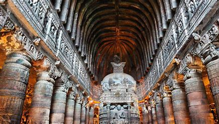
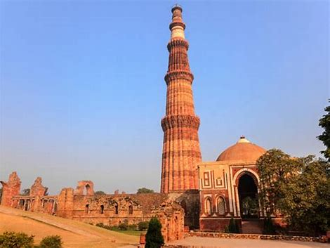
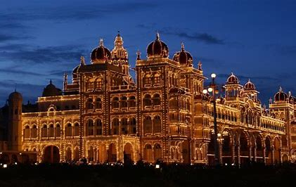

The Red Fort, located in Delhi, India, is a UNESCO World Heritage Site and a symbol of India's rich history. Built by the Mughal Emperor Shah Jahan in the 17th century, it is a stunning example of Mughal architecture. The fort's red sandstone walls, which give it its name, enclose a complex of impressive structures, including palaces, halls, and gardens. The iconic Lahore Gate serves as the main entrance, leading to the magnificent Diwan-i-Am (Hall of Public Audience) and Diwan-i-Khas (Hall of Private Audience). The Red Fort is a testament to India's cultural heritage and attracts millions of visitors each year.
Elephant caves
Elephanta Caves, located on Elephanta Island in Mumbai Harbor, is a UNESCO World Heritage Site known for its ancient rock-cut caves. These caves date back to the 5th to 8th centuries and predominantly feature Hindu and Buddhist sculptures. The main cave houses a colossal Trimurti sculpture depicting the three faces of Lord Shiva. The intricate carvings and artwork in the caves showcase a blend of Shaiva, Shakta, and Vaishnavite traditions. Visitors can reach the island by a short ferry ride from Mumbai and explore the marvels of Elephanta Caves, offering a glimpse into India's rich cultural and religious history.

Charminar

Charminar, located in the heart of Hyderabad, India, is a iconic monument and a symbol of the city's rich history. Built in 1591 by Sultan Muhammad Quli Qutb Shah, it stands at the intersection of four grand arches, each facing a different street. The structure, adorned with Islamic architecture, is a square-shaped monument with four grand arches supporting towering minarets. The name "Charminar" translates to "Four Towers" in English. Visitors can explore the surrounding bustling markets and experience the vibrant cultural heritage that Charminar represents.
Rani ki vav
Rani ki Vav, located in Patan, Gujarat, is a UNESCO World Heritage Site and an intricately designed stepwell. Built in the 11th century by Queen Udayamati in memory of her husband, King Bhimdev I, the vav is an architectural marvel. It features seven levels of ornate carvings, showcasing Hindu mythology, gods, and goddesses. The stepwell's unique structure, with its pillared pavilions and intricate sculptures, makes Rani ki Vav a stunning example of ancient Indian subterranean architecture, reflecting the cultural and artistic prowess of the Solanki dynasty.

Sanchi stupa

Sanchi Stupa, located in Madhya Pradesh, India, is a UNESCO World Heritage Site and a significant Buddhist monument. Constructed during the Mauryan period in the 3rd century BCE by Emperor Ashoka, it stands as a symbol of his commitment to Buddhism. The stupa is renowned for its hemispherical dome, adorned with intricate carvings and gateways depicting scenes from the life of Buddha. The Great Stupa at Sanchi is considered one of the oldest stone structures in India, with its architecture reflecting the evolution of Buddhist art and culture.
Mehrangarh
Mehrangarh, located in Jodhpur, Rajasthan, is one of the largest forts in India and a symbol of Marwar's architectural grandeur. Perched atop a 125-meter high hill, the fort offers panoramic views of the blue-hued city. Built by Rao Jodha in the 15th century, Mehrangarh is surrounded by imposing walls and houses a museum showcasing artifacts, weapons, and royal memorabilia. The intricate carvings, expansive courtyards, and well-preserved palaces within the fort provide a glimpse into the opulent lifestyle of the Marwar rulers.

Jaisalmer Fort

Jaisalmer Fort, located in the heart of the Thar Desert in Rajasthan, India, is a magnificent sandstone fortress that stands as a testament to the city's rich history. Built in 1156 AD by Rawal Jaisal, the fort is perched atop the Trikuta Hill and is often referred to as the "Golden Fort" due to its distinctive yellow sandstone construction. The fort's unique architecture, with its intricate carvings and bastions, is a fine example of Rajput military design. Recognized as a UNESCO World Heritage Site, Jaisalmer Fort offers panoramic views of the surrounding desert landscape.
Taj Mahal
The Taj Mahal, located in Agra, Uttar Pradesh, is a sublime white marble mausoleum commissioned by Mughal Emperor Shah Jahan in memory of his beloved wife Mumtaz Mahal. Completed in 1653, this UNESCO World Heritage Site is an architectural marvel, featuring intricate carvings, symmetrical gardens, and a majestic dome. The monument's beauty is heightened by the changing hues at different times of the day, from the soft glow of dawn to the enchanting moonlit nights. The Taj Mahal stands as a testament to eternal love, blending Persian, Indian, and Islamic architectural styles, and continues to attract millions of visitors from around the globe.

Ellora Caves

The Ellora Caves, located in Maharashtra, India, form one of the largest rock-cut monastery-temple cave complexes in the world. Carved out of solid rock, these caves represent a remarkable fusion of Hindu, Jain, and Buddhist religious art and architecture. The complex consists of 34 caves, each displaying intricate sculptures, paintings, and iconography. Notable among them is Cave 16, also known as the Kailasa Temple, dedicated to Lord Shiva. Ellora Caves, a UNESCO World Heritage Site, date back to the 6th to 9th centuries and showcase the cultural and artistic achievements of ancient India.
Qutub minar
Qutub Minar, located in Delhi, is an iconic historical monument that stands as a testament to India's rich architectural heritage. Built in the 12th century by Qutub-ud-din Aibak, the first ruler of the Delhi Sultanate, the minaret reaches a height of 73 meters, making it the tallest brick minaret in the world. Composed of intricately carved red sandstone and marble, the Qutub Minar is adorned with verses from the Quran and intricate geometric patterns. The structure is a fusion of Indo-Islamic and Afghan architectural styles, reflecting the cultural amalgamation during the medieval period.

Mysore palace

Mysore Palace, located in the heart of Mysuru, Karnataka, is a majestic testament to Indo-Saracenic architecture. Built in the early 20th century, this iconic palace served as the official residence of the Wadiyar dynasty, the erstwhile rulers of Mysore. With its intricately designed interiors, stunning courtyards, and grand Durbar Hall, the palace reflects a blend of Hindu, Muslim, Rajput, and Gothic styles. Illuminated at night, the palace becomes a spectacular sight, drawing visitors to experience the regal charm and cultural heritage of this historic landmark.
Amer Fort
Amer Fort, located in Jaipur, Rajasthan, is a majestic hilltop fortress that stands as a testament to the grandeur of Rajput architecture. Built in the 16th century by Raja Man Singh I, the fort is a splendid blend of Rajput and Mughal styles. Surrounded by rugged hills, Amer Fort offers panoramic views of the surrounding landscape. The fort's impressive entrance, known as Suraj Pol, leads to a series of courtyards, palaces, and intricately decorated halls, such as the Sheesh Mahal (Hall of Mirrors). The intricate frescoes, ornate pillars, and delicate mirror work within the fort showcase the opulence of the Rajput era.